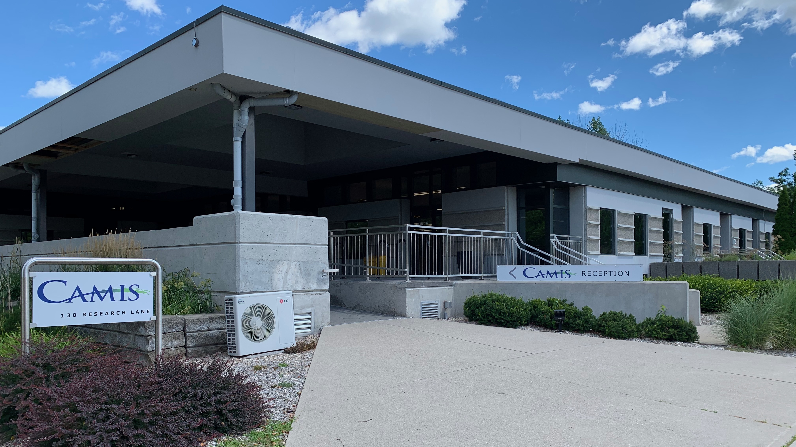

Camis - Software Configuration Specialist
Introduction
For my Summer 2020 work term I was hired by Camis as a software configuration specialist. I had the opportunity to work remotely in this position due to COVID-19 restrictions.
About the Employer
Camis is a software company located in Guelph that specializes in creating large scale reservation software for clients. The reservation software they create is almost exclusively used for camping and other outdoor activities. There are many different teams at Camis that are responsible for different tasks such as development, quality assurance, and product delivery. All of these teams work together to produce the current product 'Camis 5' which is a combination of an on-site and web software system for creating activity reservations.
Job Description
At Camis, I was a member of the software configuration team, a sector of the product delivery team. My team was responsible for the alteration and addition of new content in client software.
For the first few weeks in my position, I got to work with both the quality assurance and software configuration teams to develop the necessary understanding of the software product and how to
accurately test the changes I was making in the configuration as a software configuration specialist. After 2 weeks in the position, my job responsibilities shifted largely towards the completion
of configuration task tickets submitted by clients through Jira (ticket management software). My workflow consisted of gathering information to complete the tickets through software documentation
hosted on Camis’ intranet content management system, making non-programmatic alterations within the Camis desktop software, and testing these changes in a training web service or desktop application.
Configuration tasks were divided into 2 main categories, weekly epic tasks, and project tasks. Weekly epic tasks were the majority of requests that I was responsible for, these tickets would
come in anytime throughout the week and were to be completed, reviewed by another software configuration team member, and deployed the following week. Once I was comfortable in my role as
a configuration specialist I began to review the tickets other team members had completed and approve them for production. Project Tasks were much larger groups of tickets all related to the setup
of new features or large scale changes required for clients. Some examples of projects would be setting up an entirely new campground or creating a new type of service to be offered through the client’s
application instance. As I grew more confident in my position I was given the opportunity to complete client projects which often involved increased communication with client account managers on the
Camis team to ensure all project expectations were met correctly.
Goals
Soft-Skill Goals
Given the difficult circumstances produced by COVID-19 during 2020, the first goal I set for myself was to improve my ability to work on a team through remote methods. I had wanted to learn how to effectively use tools such as Jira and Confluence to monitor my progress on team tasks as well as understand the flow of overall team activities. While working remotely did prove challenging, within the first few weeks of starting my position I was able to make excellent use of Confluence to learn about the software processes required for my position, allowing me to participate more in team discussion and problem-solving. This allowed me to quickly shift into making significant use of our team’s Jira dashboard to monitor my own ticket progress as well as see the contributions and actions that other team members were making in real-time, greatly reducing the difficulty of working remotely.
My second learning goal for the semester was also strongly related to working remotely. This goal was to improve my ability to communicate via text formats while completing complex work tasks. I found that within my first few weeks of work it became a very important part of my position to be able to effectively and efficiently communicate with my team members through text-based messaging services. This goal became a persistent effort throughout my work-term and was less ‘measurable’ of a goal than it was visible in my everyday work. I would often communicate with my team members and managers to ensure that I was successfully making myself clear through my writing and never hesitated to contact my supervisor Jenna Hill should I have any questions or concerns regarding my performance. Through regular meetings with my team members, I was able to confirm that I was indeed effectively communicating through text streams such as slack and leaving thorough and appropriate comments/notes on Jira tickets for others to reference.
Position Specific Goals
After working for a little while at Camis I realized that many of the goals I wanted to achieve were specifically related to my role at the company.
The first of these goals was to expand my understanding of the elements within the software that I am using in order to perform my job to the highest capability possible. This became very relevant shortly after I started my position as there was a vast array of content that I would need to be able to work on without requiring assistance from other team members. I set out to achieve this goal by learning how to make use of the online documentation tool Confluence where past and current team members as well as quality assurance staff had written and organized incredible amounts of documentation. My ability to make use of Confluence’s search and filtering features grew quickly as I began to be assigned weekly epic tickets that required completing. By the time I was approximately halfway through my work term I was successfully able to understand or efficiently find the information for most elements of the Camis software without having to ask my colleagues for clarification or assistance.
Conclusion
Acknowledgments
I would like to thank Jenna Hill as well as the rest of the software configuration team at Camis for making my remote work experience incredibly rewarding and providing me with the necessary support to succeed in my role.